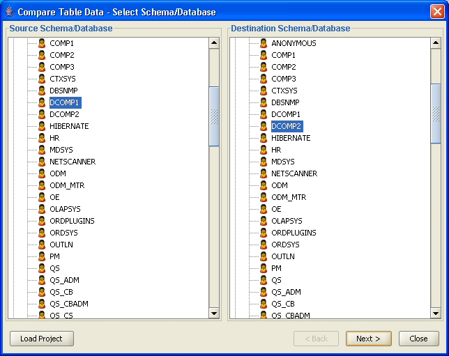
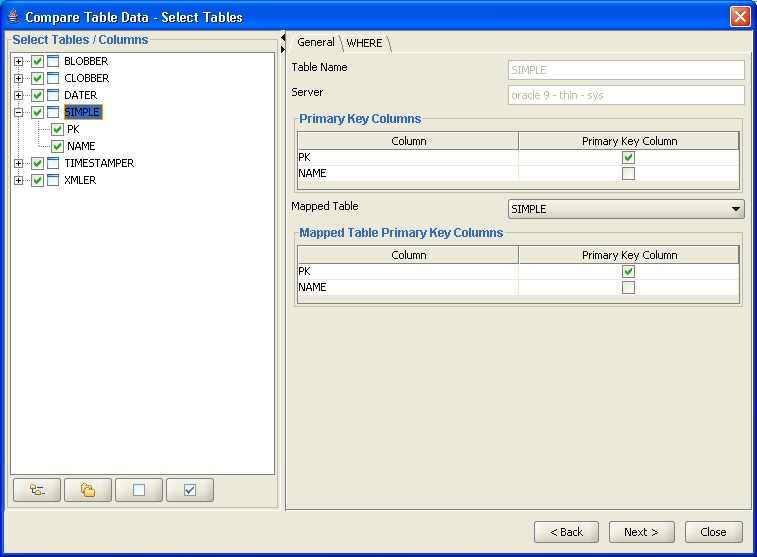
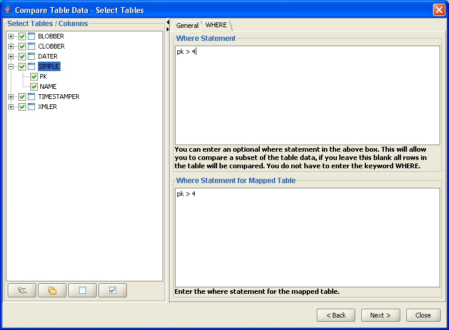
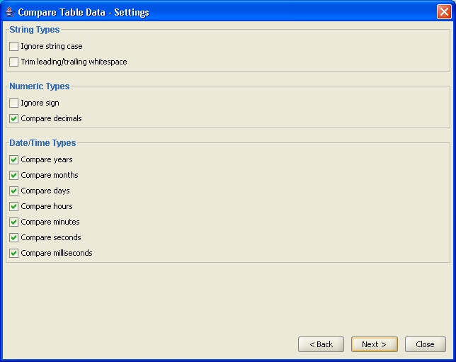
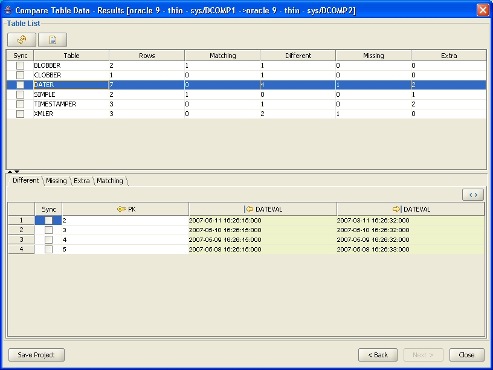
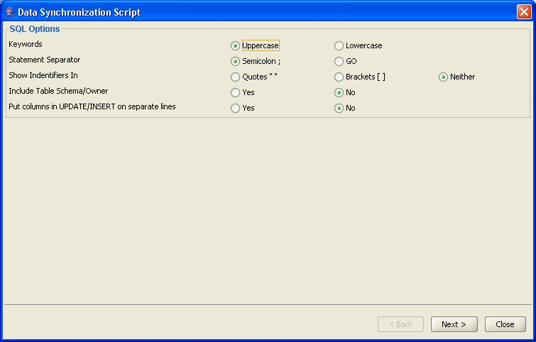
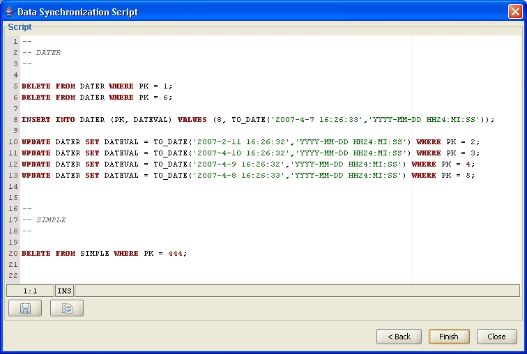

Table Data Comparison Tool allows you to compare data in one or more pairs of tables. The tables can be in the same or different schemas/databases and they don't need to have the same name or columns. Comparison can be done between tables in different DBMS platforms such as Oracle and SQL Server.
You can invoke the Table Data Comparison Tool from the 'Tools' menu in the main toolbar of DB Solo.
The first screen of the comparison tool allows you to select the schemas/databases that contain the tables you wish to compare. The tree control on the left hand side allows you to select 'source' of the comparison and the right side lets you pick the 'destination' schema.

Figure - Select Schema/Database Screen
After selecting the schemas/databases click on 'Next' to move to table selection panel.
The table selection screen lets you select the tables you want to include in the comparison. The tree control on the left hand side lets you select the tables and their columns to be included in the comparison. Notice that you always have to select the primary key columns of a table if you wish to include the table in the data comparison. The right-hand side lets you select what the primary key columns of the table are. By default the actual primary key constraints' columns are selected, if one exists. If the table does not have a primary key constraint, you must select a set of columns that uniquely identify rows in the table, i.e. no two rows can have the same values in the primary key columns. If the selected columns do not uniquely identify rows in the table, the comparison results are not accurate.
The right-hand side also lets you pick the table that the selected table will be compared against. By default a table with the same name will be selected from the destination schema/database, if one exists. You can also select and/or override the primary key columns for the mapped (destination side) table.

The second tab of the panel allows you to enter a where statement for both the source and the destination side. This is useful if you don't wish to compare all rows in the tables. For example, lets say your table contains sales data and you only wanted to compare the last day. In this case you would enter a where statement that would only return sales data for the day you want to include.

The various options in the settings screen allow you to fine-tune the comparison process. All settings will get persisted when you close DB Solo, so you don't have to re-enter the same settings next time you want to run the comparison. You can configure the following settings:
Strings
Numeric
Date/Time

Figure - Comparison Settings
After applying all the settings you wish to change, click on 'Next' to start the comparison. Notice that if the number of rows to compare is large , the comparison may potentially take several minutes to complete.
After DB Solo has completed the comparison process, you will see the results screen that is divided into two sections. The upper part lists all the compared tables and gives a summary of the comparison process. When you select a table in the upper section, the comparison result details will be shown in the bottom section for that table. The bottom screen has the following four tabs:

Figure - Results Panel
The table data comparison tool has a Synchronization Script creator which allows you to create a DML script that contains all required SQL DELETE/INSERT/UPDATE statements to synchronize the selected source tables with their counterparts on the destination side. First you need to select the tables and individual rows to be included in the synchronization script by checking the appropriate checkboxes in the 'Sync' columns. When you check the Sync checkbox on the table list, all rows that are different will automatically be selected for that table.
The first screen of the synchronization script creator dialog allows you to change the script generation settings. The settings screen will let you change the keyword case of the SQL statements, the statement separator type and whether identifiers are shown in brackets, quotes or neither. You can optionally also include the tables' schemas/owners in the generated script.

The last page of the Synchronization Script Wizard will show the DML script based on the data comparison results and your settings. The buttons on this screen let you save the script to a file or copy it to the system clipboard.

DB Solo can optionally create control (.CTL) and data (.DAT) files that can be used to load the data into the database using SQL*Loader. The delete statements will still appear in the SQL sync file but inserts and updates will be handled by SQL*Loader. One of the main benefits of this approach is the fact that you can work with large BLOB and CLOB values that cannot be handled using the standard sync SQL script. E.g. if the sync script contains an UPDATE/INSERT statement with a string literal longer than 4K, Oracle will issue the following error when you try to run the sync script:
ORA-01704: string literal too long
Another benefit is that SQL*Loader can typically insert rows in a much shorter time than running the sync SQL script would take, especially if the number of rows is large.
To enable the SQL*Loader feature, make sure the 'Use SQL*Loader scripts to INSERT and UPDATE data' option is set to 'Yes' on the Options-screen of the Sync Script Creator dialog. You also need to specify a folder where all the SQL*Loader specific files will be stored. DB Solo will create one pair of files for each table; a data file (.DAT) and a control file (.CTL). Additionally, one BIN/TXT file will be created for each BLOB/CLOB column value. If the rows that need to be synced contain lots of large BLOB/CLOB values, make sure you have enough hard-drive space to store all the values.
DELETE Statements
SQL*Loader cannot delete individual rows, therefore all the DELETE statements will appear in the SQL file.
INSERT Statements
All the INSERT statements will be handled by SQL*Loader. There is one record in the .DAT file for each row that needs to be inserted.
UPDATE Statements
SQL*Loader does not support updates. As a result of this, the SQL sync file will have DELETE statements for all rows that need to be updated. The .DAT file will then contain a record for each row that needs to be updated. The SQL sync file needs to be run first to do the deletes and after that SQL*Loader needs to be invoked to do the inserts. Notice that the records in the .DAT file will contain all the columns of the record, not just the ones that are different.
BLOB and CLOB Values
If the record to be updated contains BLOB or CLOB columns, DB Solo will store each BLOB/CLOB value in a separate file. The .DAT file will then contain just the name of the file that contains the actual BLOB/CLOB value. In the control file the filler column is specified as follows:
X_FILENAME FILLER CHAR(256)
where X is the name of the column and the actual BLOB/CLOB value will be loaded on the next line using the following control file syntax:
X LOBFILE(X_FILENAME) TERMINATED BY EOF
where X is again the name of the column.
The 'Load Project' button on the first page of the comparison tool allows you to open projects you have saved earlier. The project files contain information about the source / destination databases you have selected, tables/columns you selected for comparison as well as all the comparison settings from the comparison options page of the tool.
After completing a table data comparison, you can save your settings on the last page of the comparison tool by clicking on the 'Save Project' button.
Data comparison can be run from a command shell using settings from a saved project file. This allows you to run data comparisons regularly using cron or a similar mechanism. The following shell command will run a data comparison from settings in 'myproject.xml':
commandLine -dataCompare myproject.xml
where 'myproject.xml' is a project file. You can use project files on different machines as long as the configured server connection names match. The project files are xml text files that can be edited manually outside DB Solo.
The command line tool will output errors and other messages in dataCompare.log file.
| Back to Index | DB Solo www.dbsolo.com support@dbsolo.com |